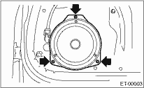
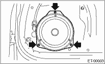

1. Disconnect the ground cable from the battery.
2. Remove the front door trim. 
3. Remove the front speaker mounting screws.

4. Disconnect the harness connector and remove the front speaker.
ENTERTAINMENT > Front Speaker
1. Disconnect the ground cable from the battery.
2. Remove the front door trim.
3. Remove the front speaker mounting screws.

4. Disconnect the harness connector and remove the front speaker.